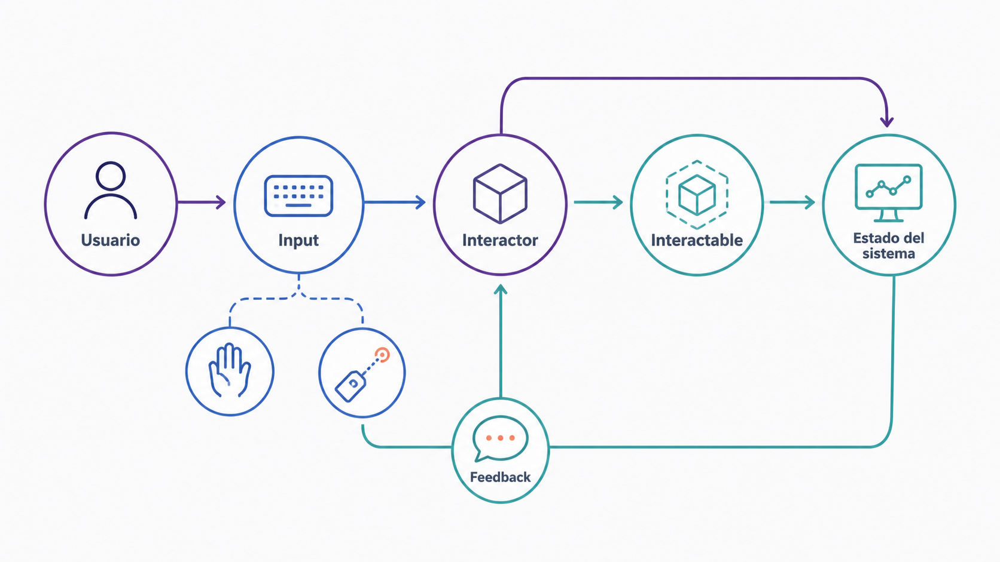
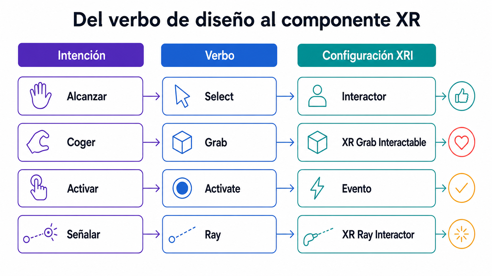
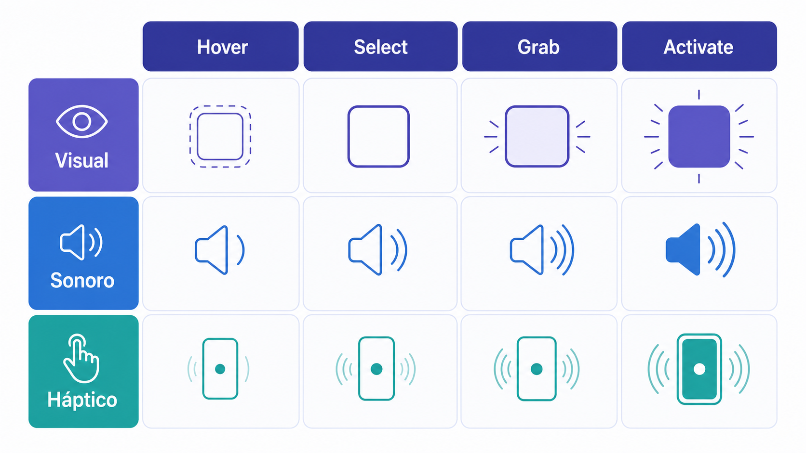

Diseño de interacción para experiencias inmersivas
Interactores e interactuables como concepto de diseño, modos de interacción y respuesta multisensorial.
Objetivos de aprendizaje
Modelar la interacción como pareja interactor ↔ interactable.
Distinguir interacción directa, ray, grab, select y activate.
Diseñar respuesta visual, sonoro y háptico coherente.
Conceptos clave
Interactor / InteractableInteracción directaRay interactionGrab / Select / ActivateUI espacialRespuesta visual, sonoro y hápticoUsabilidad y accesibilidad
Introducción
Esta quinta clase se centra en el diseño de interacción para experiencias inmersivas. Una experiencia XR no se define solo por el espacio virtual, la estética visual o la tecnología utilizada, sino por lo que el usuario puede hacer dentro de ella y por la manera en que el sistema responde a esas acciones. La clase introduce la relación fundamental entre Interactor e Interactable, los modos de interacción (directa, ray, grab, select, activate, UI espacial, patrones como poke, gaze, dwell o gaze + pinch) y el papel del respuesta multisensorial como respuesta visual, sonora y háptica que confirma que una acción ha sido reconocida.
Conceptos en detalle
Interactor
Elemento que inicia una interacción. Puede ser una mano virtual, un controlador, un rayo, la mirada, un dedo, un cursor, una zona de proximidad o incluso el cuerpo del usuario. Responde a la pregunta: ¿desde dónde actúa el usuario?
Mano izquierda o mano derecha
Ray Interactor
Gaze Interactor
Poke Interactor
Controlador físico
Dedo sobre pantalla táctil
Cuerpo entrando en un trigger
Interactable
Elemento que puede recibir una acción: un objeto, una interfaz, una zona del espacio, un botón, un soporte, una palanca, una puerta, un panel o un sistema. Responde a la pregunta: ¿qué puede recibir la acción del usuario?
Objeto que se puede coger
Botón en UI espacial
Palanca o puerta
Trigger de activación
Zona de teleportación
Panel informativo
Objeto que cambia de estado
Interacción directa
Ocurre cuando el usuario actúa cerca del objeto. En XR suele realizarse mediante manos o controladores que entran en contacto o proximidad con un objeto. Aporta fisicalidad y presencia, pero requiere que el objeto esté al alcance y puede cansar.
Coger un cubo
Pulsar un botón físico
Empujar una puerta
Mover una palanca
Colocar una pieza sobre un soporte
Ray interaction
Permite interactuar con objetos lejanos mediante un rayo o puntero. Reduce esfuerzo físico y funciona muy bien con interfaces y teleportación, pero es menos corporal y requiere respuesta visual claro.
Apuntar a un botón distante
Seleccionar un objeto desde lejos
Activar un menú
Elegir una zona de teleportación
Interactuar con una UI espacial
Grab
Acción de coger o agarrar un objeto. Conecta directamente mano, cuerpo y objeto. Un buen grab responde a: ¿el objeto invita a ser cogido?, ¿está a altura cómoda?, ¿qué ocurre al agarrarlo y al soltarlo?, ¿cómo sabe el usuario que ya lo tiene?
Coger una herramienta
Agarrar una llave
Levantar una pieza
Sostener un objeto narrativo
Select
Acción de seleccionar un elemento. No siempre implica cogerlo: un objeto puede ser seleccionado al apuntar, tocar, mirar o entrar en proximidad. La selección debe tener respuesta claro.
Apuntar a un botón
Mirar una opción
Pasar la mano sobre un objeto
Tocar una tarjeta
Marcar una zona de teleportación
Activate
Acción de ejecutar una función. Puede ocurrir después de seleccionar o agarrar y debe producir una consecuencia perceptible.
Pulsar un botón
Encender una luz
Abrir una puerta
Activar un sonido
Lanzar una animación
Iniciar una secuencia
UI espacial
Interfaz situada dentro del mundo 3D. Ocupa un lugar en la escena y debe respetar distancia, escala, legibilidad y orientación. No debe estar demasiado cerca de la cara ni moverse de forma molesta.
Panel informativo
Menú flotante
Botón diegético
Señalética en el espacio
Pantalla dentro del mundo virtual
HUD espacial
Respuesta multisensorial
Respuesta que recibe el usuario tras una acción. Puede ser visual, sonora, háptica o una combinación. Sin respuesta, la acción se siente fantasma: el usuario no sabe si el sistema la ha reconocido.
El objeto cambia de color al hacer hover
Suena un clic al seleccionar
El mando vibra al activar
Una luz se enciende al colocar una pieza
Una puerta se abre tras pulsar un botón
Usabilidad y accesibilidad
Usabilidad: que la interacción sea clara, comprensible, eficiente y coherente. Accesibilidad: que pueda ser usada por personas con distintos cuerpos, capacidades y contextos. En XR implica alturas cómodas, alternativas a gestos complejos, UI legible, respuesta no solo visual y evitar fatiga.
Objetos a alturas cómodas
Alternativas a gestos complejos
Interacción sentada y de pie
Subtítulos y contraste adecuado
Permitir pausas
La interacción como relación interactor ↔ interactable
Toda interacción XR puede pensarse como una relación entre dos partes: el interactor inicia la acción y el interactable la recibe y responde.
Esta abstracción permite diseñar interacciones de forma modular. Un mismo objeto puede ser usado por distintos interactores: un botón puede activarse mediante un dedo, un rayo, la mirada, un mando o un trigger de proximidad.
Y un mismo interactor puede actuar sobre distintos interactables: una mano puede coger un objeto, pulsar un botón, abrir una puerta, colocar una pieza o activar una interfaz. Pensar así ayuda a diseñar experiencias más claras y reutilizables.

Figura 3.3 — Modelo sistémico de interactor e interactable.
El diseño empieza antes del componente técnico
En Unity podemos añadir componentes como XR Grab Interactable, XR Direct Interactor o XR Ray Interactor. Sin embargo, antes de añadir componentes conviene responder preguntas de diseño: ¿qué quiere hacer el usuario?, ¿qué objeto recibe la acción?, ¿cómo sabe que puede interactuar?, ¿qué gesto debe hacer?, ¿qué respuesta recibe?, ¿qué cambia después?
La tecnología implementa una decisión de diseño. No la sustituye.
Interacción directa: fisicalidad y proximidad
La interacción directa comunica fisicalidad. Si un usuario se acerca a un objeto, lo toca y lo agarra, la experiencia produce una relación corporal fuerte. Es adecuada para objetos pequeños, herramientas, piezas, llaves, palancas, botones físicos, esculturas manipulables u objetos narrativos.
Pero requiere cuidado: no colocar objetos demasiado bajos ni demasiado altos, evitar movimientos incómodos, ofrecer alternativas si el usuario está sentado, no exigir precisión excesiva y dar respuesta inmediato al tocar o agarrar.
Ray interaction: alcance y abstracción
La interacción mediante rayo permite interactuar desde lejos. Es útil para menús, botones lejanos, teleportación, selección de objetos distantes, experiencias donde el usuario no debe moverse mucho y accesibilidad.
Pero también tiene riesgos: puede parecer menos natural, puede convertirse en un láser demasiado abstracto, puede reducir el valor corporal de la experiencia y generar confusión si hay demasiados objetos seleccionables. El rayo debe tener una línea visual clara, pero no debe dominar la escena.
Grab, select y activate como verbos básicos
Muchos sistemas XR pueden reducirse a tres verbos básicos: Select → Grab → Activate.
Select: el usuario identifica o apunta un objeto (ejemplo: el objeto cambia de color al hacer hover). Grab: el usuario toma el objeto (queda unido a la mano). Activate: el usuario ejecuta una función (el objeto reproduce un sonido, abre una puerta o activa una luz).
Estos verbos pueden combinarse: seleccionar una llave → cogerla → colocarla en una cerradura → activar apertura.

Figura 3.16 — Del verbo de interacción a su configuración en XRI.
UI espacial: interfaces dentro del mundo
En XR, una UI pegada a la pantalla puede resultar extraña. Muchas veces conviene situar la interfaz dentro del mundo. Una buena UI espacial debe ser legible, estable, estar a una distancia cómoda, orientada hacia el usuario, coherente con el entorno, activable con rayo, mano o mirada, no intrusiva y accesible.
Evitar: texto demasiado pequeño, paneles demasiado cerca de la cara, menús que siguen agresivamente al usuario, interfaces sin contraste, botones pequeños, UI fuera del campo cómodo de visión, demasiada información a la vez.
UI diegética: cuando forma parte del mundo de la experiencia (un panel de control dentro de una nave, una pantalla en una pared, una etiqueta sobre una pieza de museo, un holograma, un libro interactivo). Suele integrarse mejor en experiencias inmersivas.
Respuesta multisensorial: cerrar el bucle
El respuesta es la confirmación de que la interacción existe. Un buen respuesta responde a tres momentos: antes, durante y después de la acción.
Antes: el objeto comunica que puede usarse (brillo suave, color contrastado, forma reconocible, sonido localizado, posición accesible). Durante: el sistema confirma que está reconociendo la acción (cambio de material al hover, vibración al agarrar, sonido al seleccionar, animación de presión en un botón).
Después: el mundo cambia como consecuencia (se abre una puerta, aparece una proyección, suena una respuesta, cambia la iluminación, se desbloquea una zona). Si no hay cambio, la interacción parece inútil.

Figura 3.4 — Matriz de respuesta visual, sonoro y háptico por estado.
Tipologías
Poke
Tocar o pulsar directamente un elemento con el dedo, mano o controlador. Muy intuitivo y con relación corporal clara, funciona bien con UI cercana.
Botones físicos
Paneles cercanos
Interfaces táctiles
Objetos pequeños
Preguntas de análisis
¿El elemento está a una distancia cómoda para alcanzarlo sin fatiga?
¿La precisión requerida es razonable para una mano en movimiento?
¿Hay respuesta inmediato al contacto?
Ray
Puntero o rayo para seleccionar elementos a distancia. Aporta alcance, precisión y menor esfuerzo físico, pero es más abstracto y necesita buena visualización del rayo.
UI lejana
Teleportación
Selección de objetos
Menús
Interacción accesible
Preguntas de análisis
¿El rayo es claramente visible sin dominar la escena?
¿La diana de selección es suficientemente grande?
¿La fisicalidad pierde valor al usar rayo en lugar de mano?
Dwell
Activar algo tras mantener la mirada o el puntero durante un tiempo. No requiere botón y es útil para usuarios con movilidad limitada, pero puede ser lento o causar activaciones accidentales.
Experiencias sin mandos
Accesibilidad
Interfaces simples
Selección por mirada
Preguntas de análisis
¿El tiempo de dwell es suficiente para evitar activaciones accidentales?
¿Hay respuesta visual del progreso (un círculo que se llena, por ejemplo)?
¿La mirada sostenida puede fatigar al usuario?
Gaze + pinch
Combina mirada y gesto: el usuario mira un elemento y confirma con un gesto de dedos. Reduce activaciones accidentales y combina intención visual y acción manual.
Interfaces espaciales
Sistemas con seguimiento de manos
Experiencias MR
Selección precisa sin mandos
Preguntas de análisis
¿El seguimiento de manos es lo bastante estable para el gesto?
¿El usuario sabe que tiene que mirar y pinzar (onboarding)?
¿El gesto se confunde con movimientos naturales de la mano?
Grab
El usuario agarra un objeto directamente. Alta presencia, comprensión inmediata y buena conexión cuerpo-objeto.
Objetos físicos simulados
Herramientas
Piezas
Juegos de manipulación
Experiencias educativas
Preguntas de análisis
¿El collider del objeto permite un agarre sin fallos?
¿Hay respuesta claro al coger y al soltar?
¿La cantidad de objetos en escena puede saturar al usuario?
Trigger espacial
El usuario activa algo al entrar en una zona. No requiere botón y funciona muy bien en experiencias instalativas o ambientales.
Activar audio al entrar en una sala
Lanzar una narración
Cambiar iluminación
Iniciar una secuencia
Detectar presencia
Preguntas de análisis
¿El usuario podrá entender qué disparó el cambio?
¿Hay señalización o respuesta que comunique el trigger?
¿La zona puede activarse antes de tiempo por error?
Referentes
Half-Life: Alyx
Diseña muchos objetos específicamente para ser manipulados con manos y mandos. Abrir cajones, coger munición, usar herramientas, lanzar objetos o interactuar con paneles no son acciones decorativas, sino parte central de la experiencia.
¿Qué acciones están abstraídas para mejorar la jugabilidad?
¿Qué interacción simple podría adaptarse al Laboratorio 3?
Job Simulator
Utiliza un lenguaje de interacción muy claro. Los objetos son grandes, reconocibles, exagerados y fáciles de manipular. No busca realismo estricto, sino claridad, humor y respuesta inmediata.
¿Qué puede aprender un prototipo de clase de este diseño?
Tilt Brush
Convierte el controlador en una herramienta creativa. El usuario no solo selecciona objetos, sino que dibuja en el espacio. El interactor no es simplemente una mano o puntero: es una extensión expresiva del cuerpo.
¿Qué transforma al controlador en herramienta expresiva?
¿Cómo se relaciona el gesto con el resultado visual?
¿Qué respuesta hace que dibujar sea satisfactorio?
¿Qué parte de la interacción es mimética y cuál abstracta?
¿Cómo podría diseñarse una herramienta expresiva en Unity?
Actividades
Ejercicio 1 — Diseñar tres interacciones para un proyecto inmersivo
Actividad central · 23 min · Diseño conceptual
Diseñar tres interacciones para un posible proyecto inmersivo: 1 interacción con objeto, 1 de navegación espacial y 1 con interfaz. Cada ficha debe incluir interactor, interactable, acción del usuario, respuesta del sistema, respuesta visual, sonoro y háptico, riesgo de usabilidad y solución de accesibilidad.
Respuesta: ¿cómo sabe que la acción ha sido reconocida?
Consecuencia: ¿qué cambia en la experiencia?
Diagrama: dibujar el flujo usuario → objeto → respuesta
Ejercicio 2 — Matriz Interactor / Interactable
Actividad central · 23 min · Análisis de diseño
Crear una matriz con tres interactores (mano directa, ray interactor, mirada) y cinco interactuables (objeto físico, botón UI, zona de teleport, panel informativo, trigger espacial). Marcar cada celda como adecuada, posible pero limitada o no recomendable.
¿Qué interactor es más versátil?
¿Qué interactable requiere más precisión?
¿Qué combinación sería más accesible?
¿Qué combinación sería más inmersiva?
¿Qué combinación usarías en tu proyecto?
Actividades de ampliación opcional · fuera de la sesión
Ejercicio 3 — Diseñar respuesta multisensorial
Ampliación opcional · 20 min · Diseño aplicado
Elegir una acción sencilla (coger un objeto, pulsar un botón, activar una puerta, colocar una pieza, seleccionar un menú, entrar en una zona) y diseñar respuesta antes, durante y después.
Antes de la acción: ¿qué indica que se puede interactuar?
Durante la acción: ¿qué respuesta confirma que el sistema la reconoce?
Después de la acción: ¿qué consecuencia aparece?
Respuesta visual
Respuesta sonoro
Respuesta háptico
Respuesta narrativo o sistémico
Posible problema y solución
Ejercicio 4 — Análisis de una mala interacción
Ampliación opcional · 20 min · Crítica de UX
Recordar o buscar una experiencia interactiva —juego, app, VR, AR, instalación— donde una interacción haya resultado confusa o incómoda, y analizarla.
¿Qué intentabas hacer?
¿Qué interactor usabas?
¿Cuál era el interactable?
¿Qué respuesta faltaba?
¿La acción tenía consecuencia clara?
¿Qué problema de usabilidad apareció?
¿Cómo lo rediseñarías?
Investigación aplicada
Ampliación opcional · fuera de la sesión
Investigar tres patrones de interacción XR (elegir entre poke, ray, dwell, gaze, gaze + pinch, grab, seguimiento de manos, teleport, direct touch, gesture-based interaction o voice interaction) y completar una ficha comparativa para cada uno.
¿Qué patrón es más natural?
¿Qué patrón es más preciso?
¿Qué patrón es más accesible?
¿Qué patrón requiere más aprendizaje?
¿Qué patrón usarías en tu proyecto y por qué?
Conexión con Unity
Diseñar una interacción y traducirla a componentes de Unity (XR Interaction Toolkit), conectando la decisión de diseño con interactores, interactuables, eventos y respuesta.
Nombre de la interacción
Descripción: ¿qué hará el usuario?
Interactor en Unity: XR Direct Interactor / XR Ray Interactor / Gaze / Trigger / Otro
Interactable en Unity: XR Grab Interactable / UI Button / Teleportation Area / Collider Trigger / Otro
Componentes necesarios: Collider, Rigidbody, XR Grab Interactable, AudioSource, script personalizado, material de respuesta